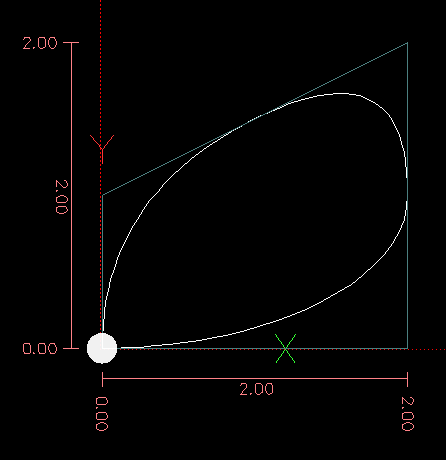
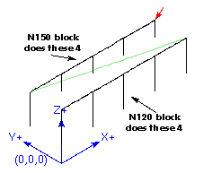
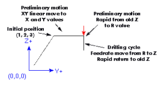
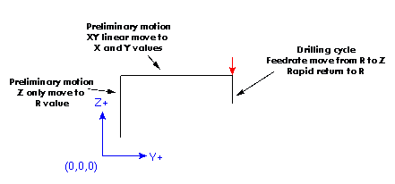

G Codes
Conventions
Conventions used in this section
In the G code prototypes the hyphen ('-') stands for a real value and ('<>') denotes an optional item.
If 'L-' is written in a prototype the '-' will often be referred to as the 'L number', and so on for any other letter.
In the G code prototypes the word 'axes' stands for any axis as defined in your configuration.
An optional value will be written like this '<L→'.
A real value may be:
An explicit number, '4'
An expression, '[2+2]'
A parameter value, '#88'
A unary function value, 'acos[0]'
In most cases, if 'axis' words are given (any or all of 'X Y Z A B C U V W'), they specify a destination point.
Axis numbers are in the currently active coordinate system, unless explicitly described as being in the absolute coordinate system.
Where axis words are optional, any omitted axes will retain their original value.
Any items in the G code prototypes not explicitly described as optional are required.
The values following letters are often given as explicit numbers. Unless stated otherwise, the explicit numbers can be real values. For example, 'G10 L2' could equally well be written 'G[2*5] L[1+1]'. If the value of parameter 100 were 2, 'G10 L#100' would also mean the same.
If 'L-' is written in a prototype the '-' will often be referred to as the 'L number', and so on for any other letter.
G Code Quick Reference Table
Code |
Description |
|---|---|
Coordinated Motion at Rapid Rate |
|
Coordinated Motion at Feed Rate |
|
Coordinated Helical Motion at Feed Rate |
|
Dwell |
|
Cubic Spline |
|
Quadratic B-Spline |
|
NURBS, add control point |
|
Diameter Mode (lathe) |
|
Radius Mode (lathe) |
|
Set Tool Table Entry |
|
Set Tool Table, Calculated, Workpiece |
|
Set Tool Table, Calculated, Fixture |
|
Coordinate System Origin Setting |
|
Coordinate System Origin Setting Calculated |
|
Plane Select |
|
Set Units of Measure |
|
Go to Predefined Position |
|
Go to Predefined Position |
|
Spindle Synchronized Motion |
|
Rigid Tapping |
|
Probing |
|
Cancel Cutter Compensation |
|
Cutter Compensation |
|
Dynamic Cutter Compensation |
|
Use Tool Length Offset from Tool Table |
|
Dynamic Tool Length Offset |
|
Apply additional Tool Length Offset |
|
Cancel Tool Length Offset |
|
Move in Machine Coordinates |
|
Select Coordinate System (1 - 9) |
|
Path Control Mode |
|
Path Control Mode with Optional Tolerance |
|
Drilling Cycle with Chip Breaking |
|
Left-hand Tapping Cycle with Dwell |
|
Multi-pass Threading Cycle (Lathe) |
|
Cancel Motion Modes |
|
Drilling Cycle |
|
Drilling Cycle with Dwell |
|
Drilling Cycle with Peck |
|
Right-hand Tapping Cycle with Dwell |
|
Boring Cycle, No Dwell, Feed Out |
|
Boring Cycle, Stop, Rapid Out |
|
Boring Cycle, Dwell, Feed Out |
|
Distance Mode |
|
Arc Distance Mode |
|
Coordinate System Offset |
|
Cancel G92 Offsets |
|
Restore G92 Offsets |
|
Feed Modes |
|
Spindle Control Mode |
|
Canned Cycle Z Retract Mode |
G0 Rapid Move
G0 axes
For rapid motion, program 'G0 axes', where all the axis words are optional. The 'G0' is optional if the current motion mode is 'G0'. This will produce coordinated motion to the destination point at the maximum rapid rate (or slower). 'G0' is typically used as a positioning move.
Rapid Velocity Rate
The MAX_VELOCITY setting in the ini file [TRAJ] section defines the maximum rapid traverse rate. The maximum rapid traverse rate can be higher than the individual axes MAX_VELOCITY setting during a coordinated move. The maximum rapid traverse rate can be slower than the MAX_VELOCITY setting in the [TRAJ] section if an axis MAX_VELOCITY or trajectory constraints limit it.
G0 Example
G90 (set absolute distance mode)
G0 X1 Y-2.3 (Rapid linear move from current location to X1 Y-2.3)
M2 (end program)
If cutter compensation is active, the motion will differ from the above; see the Cutter Compensation Section.
If 'G53' is programmed on the same line, the motion will also differ; see the G53 Section for more information.
The path of a G0 rapid motion can be rounded at direction changes and depends on the trajectory control settings and maximum acceleration of the axes.
It is an error if:
An axis letter is without a real value.
An axis letter is used that is not configured
G1 Linear Move
G1 axes
For linear (straight line) motion at programed feed rate (for cutting or not), program 'G1 'axes'', where all the axis words are optional. The 'G1' is optional if the current motion mode is 'G1'. This will produce coordinated motion to the destination point at the current feed rate (or slower).
G1 Example
G90 (set absolute distance mode)
G1 X1.2 Y-3 F10 (linear move at a feed rate of 10 from current position to X1.2 Y-3)
Z-2.3 (linear move at same feed rate from current position to Z-2.3)
Z1 F25 (linear move at a feed rate of 25 from current position to Z1)
M2 (end program)
If cutter compensation is active, the motion will differ from the above; see the Cutter Compensation Section.
If 'G53' is programmed on the same line, the motion will also differ; see the G53 Section for more information.
It is an error if:
No feed rate has been set.
An axis letter is without a real value.
An axis letter is used that is not configured
G2, G3 Arc Move
G2 or G3 axes offsets (center format)
G2 or G3 axes R- (radius format)
G2 or G3 offsets|R- <P-> (full circles)
A circular or helical arc is specified using either 'G2' (clockwise arc) or 'G3' (counterclockwise arc) at the current feed rate. The direction (CW, CCW) is as viewed from the positive end of the axis about which the circular motion occurs.
The axis of the circle or helix must be parallel to the X, Y, or Z axis of the machine coordinate system. The axis (or, equivalently, the plane perpendicular to the axis) is selected with 'G17' (Z-axis, XY-plane), 'G18' (Y-axis, XZ-plane), or 'G19' (X-axis, YZ-plane). Planes '17.1', '18.1', and '19.1' are not currently supported. If the arc is circular, it lies in a plane parallel to the selected plane.
To program a helix, include the axis word perpendicular to the arc plane: for example, if in the 'G17' plane, include a 'Z' word. This will cause the 'Z' axis to move to the programmed value during the circular 'XY' motion.
To program an arc that gives more than one full turn, use the 'P' word specifying the number of full turns plus the programmed arc. The 'P' word must be an integer. If 'P' is unspecified, the behavior is as if 'P1' was given: that is, only one full or partial turn will result. For example, if a 180 degree arc is programmed with a P2, the resulting motion will be 1 1/2 rotations. For each P increment above 1 an extra full circle is added to the programmed arc. Multi turn helical arcs are supported and give motion useful for milling holes or threads.
If a line of code makes an arc and includes rotary axis motion, the rotary axes turn at a constant rate so that the rotary motion starts and finishes when the XYZ motion starts and finishes. Lines of this sort are hardly ever programmed.
If cutter compensation is active, the motion will differ from the above; see the Cutter Compensation Section.
The arc center is absolute or relative as set by G90.1 or G91.1 respectively.
Two formats are allowed for specifying an arc: Center Format and Radius Format.
It is an error if:
No feed rate has been set.
The P word is not an integer.
Center Format Arcs
Center format arcs are more accurate than radius format arcs and are the preferred format to use.
The end point of the arc along with the offset to the center of the arc from the current location are used to program arcs that are less than a full circle. It is OK if the end point of the arc is the same as the current location.
The offset to the center of the arc from the current location and optionally the number of turns are used to program full circles.
When programming arcs an error due to rounding can result from using a precision of less than 4 decimal places (0.0000) for inch and less than 3 decimal places (0.000) for millimeters.
Incremental Arc Distance Mode
Arc center offsets are a relative distance from the start location of the arc. Incremental Arc Distance Mode is default.
One or more axis words and one or more offsets must be programmed for an arc that is less than 360 degrees.
No axis words and one or more offsets must be programmed for full circles. The 'P' word defaults to 1 and is optional.
For more information on 'Incremental Arc Distance Mode see the G91.1 section.
Absolute Arc Distance Mode
Arc center offsets are the absolute distance from the current 0 position of the axis.
One or more axis words and 'both' offsets must be programmed for arcs less than 360 degrees.
No axis words and both offsets must be programmed for full circles. The 'P' word defaults to 1 and is optional.
For more information on 'Absolute Arc Distance Mode see the G90.1 section.
XY-plane (G17)
G2 or G3 <X- Y- Z- I- J- P->
'Z' - helix
'I' - X offset
'J' - Y offset
'P' - number of turns
XZ-plane (G18)
G2 or G3 <X- Z- Y- I- K- P->
'Y' - helix
'I' - X offset
'K' - Z offset
'P' - number of turns
YZ-plane (G19)
G2 or G3 <Y- Z- X- J- K- P->
'X' - helix
'J' - Y offset
'K' - Z offset
'P' - number of turns
It is an error if:
No feed rate is set with the F word.
No offsets are programmed.
When the arc is projected on the selected plane, the distance from the current point to the center differs from the distance from the end point to the center by more than (.05 inch/.5 mm) OR ((.0005 inch/.005mm) AND .1% of radius).
Deciphering the Error message 'Radius to end of arc differs from radius to start:'
'start' - the current position
'center' - the center position as calculated using the i, j, or k words
'end' - the programmed end point
'r1' - radius from the start position to the center
'r2' - radius from the end position to the center
Center Format Examples
Calculating arcs by hand can be difficult at times. One option is to draw the arc with a cad program to get the coordinates and offsets. Keep in mind the tolerance mentioned above, you may have to change the precision of your cad program to get the desired results. Another option is to calculate the coordinates and offset using formulas. As you can see in the following figures a triangle can be formed from the current position the end position and the arc center.
In the following figure you can see the start position is X0 Y0, the end position is X1 Y1. The arc center position is at X1 Y0. This gives us an offset from the start position of 1 in the X axis and 0 in the Y axis. In this case only an I offset is needed.
G2 Example Line
G0 X0 Y0
G2 X1 Y1 I1 F10 (clockwise arc in the XY plane)

Figure 1. G2 Example
In the next example we see the difference between the offsets for Y if we are doing a G2 or a G3 move. For the G2 move the start position is X0 Y0, for the G3 move it is X0 Y1. The arc center is at X1 Y0.5 for both moves. The G2 move the J offset is 0.5 and the G3 move the J offset is -0.5.
G2-G3 Example Line
G0 X0 Y0
G2 X0 Y1 I1 J0.5 F25 (clockwise arc in the XY plane)
G3 X0 Y0 I1 J-0.5 F25 (counterclockwise arc in the XY plane)

Figure 2. G2-G3 Example
In the next example we show how the arc can make a helix in the Z axis by adding the Z word.
G2 Example Helix
G0 X0 Y0 Z0
G17 G2 X10 Y16 I3 J4 Z-1 (helix arc with Z added)
In the next example we show how to make more than one turn using the P word.
P word Example
G0 X0 Y0 Z0
G2 X0 Y1 Z-1 I1 J0.5 P2 F25
In the center format, the radius of the arc is not specified, but it may be found easily as the distance from the center of the circle to either the current point or the end point of the arc.
Radius Format Arcs
G2 or G3 axes R- <P->
'R' - radius from current position
It is not good practice to program radius format arcs that are nearly full circles or nearly semicircles because a small change in the location of the end point will produce a much larger change in the location of the center of the circle (and, hence, the middle of the arc). The magnification effect is large enough that rounding error in a number can produce out-of-tolerance cuts. For instance, a 1% displacement of the endpoint of a 180 degree arc produced a 7% displacement of the point 90 degrees along the arc. Nearly full circles are even worse. Other size arcs (in the range tiny to 165 degrees or 195 to 345 degrees) are OK.
In the radius format, the coordinates of the end point of the arc in the selected plane are specified along with the radius of the arc. Program 'G2' 'axes' 'R-' (or use 'G3' instead of 'G2' ). R is the radius. The axis words are all optional except that at least one of the two words for the axes in the selected plane must be used. The R number is the radius. A positive radius indicates that the arc turns through less than 180 degrees, while a negative radius indicates a turn of more than 180 degrees. If the arc is helical, the value of the end point of the arc on the coordinate axis parallel to the axis of the helix is also specified.
It is an error if:
both of the axis words for the axes of the selected plane are omitted
the end point of the arc is the same as the current point.
G2 Example Line
G17 G2 X10 Y15 R20 Z5 (radius format with arc)
The above example makes a clockwise (as viewed from the positive Z-axis) circular or helical arc whose axis is parallel to the Z-axis, ending where X=10, Y=15, and Z=5, with a radius of 20. If the starting value of Z is 5, this is an arc of a circle parallel to the XY-plane; otherwise it is a helical arc.
G4 Dwell
G4 P-
'P' - seconds to dwell (floating point)
The P number is the time in seconds that all axes will remain unmoving. The P number is a floating point number so fractions of a second may be used. G4 does not affect spindle, coolant and any I/O.
G4 Example Line
G4 P0.5 (wait for 0.5 seconds before proceeding)
It is an error if:
the P number is negative or not specified.
G5 Cubic Spline
G5 X- Y- <I- J-> P- Q-
'I' - X incremental offset from start point to first control point
'J' - Y incremental offset from start point to first control point
'P' - X incremental offset from end point to second control point
'Q' - Y incremental offset from end point to second control point
G5 creates a cubic B-spline in the XY plane with the X and Y axes only. P and Q must both be specified for every G5 command.
For the first G5 command in a series of G5 commands, I and J must both be specified. For subsequent G5 commands, either both I and J must be specified, or neither. If I and J are unspecified, the starting direction of this cubic will automatically match the ending direction of the previous cubic (as if I and J are the negation of the previous P and Q).
For example, to program a curvy N shape:
G5 Sample initial cubic spline
G90 G17
G0 X0 Y0
G5 I0 J3 P0 Q-3 X1 Y1
A second curvy N that attaches smoothly to this one can now be made without specifying I and J:
G5 Sample subsequent cubic spline
G5 P0 Q-3 X2 Y2
It is an error if:
P and Q are not both specified
Just one of I or J are specified
I or J are unspecified in the first of a series of G5 commands
An axis other than X or Y is specified
The active plane is not G17
G5.1 Quadratic Spline
G5.1 X- Y- I- J-
'I' - X incremental offset from start point to control point
'J' - Y incremental offset from start point to control point
G5.1 creates a quadratic B-spline in the XY plane with the X and Y axis only. Not specifying I or J gives zero offset for the unspecified axis, so one or both must be given.
For example, to program a parabola, through the origin, from X-2 Y4 to X2 Y4:
G5.1 Sample quadratic spline
G90 G17
G0 X-2 Y4
G5.1 X2 I2 J-8
It is an error if:
both I and J offset are unspecified or zero
An axis other than X or Y is specified
The active plane is not G17
G5.2 G5.3 NURBS Block
G5.2 <P-> <X- Y-> <L->
X- Y- <P->
...
G5.3
Warning: G5.2, G5.3 is experimental and not fully tested.
G5.2 is for opening the data block defining a NURBS and G5.3 for closing the data block. In the lines between these two codes the curve control points are defined with both their related 'weights' (P) and the parameter (L) which determines the order of the curve.
The current coordinate, before the first G5.2 command, is always taken as the first NURBS control point. To set the weight for this first control point, first program G5.2 P- without giving any X Y.
The default weight if P is unspecified is 1. The default order if L is unspecified is 3.
G5.2 Example
G0 X0 Y0 (rapid move)
F10 (set feed rate)
G5.2 P1 L3
X0 Y1 P1
X2 Y2 P1
X2 Y0 P1
X0 Y0 P2
G5.3
; The rapid moves show the same path without the NURBS Block
G0 X0 Y1
X2 Y2
X2 Y0
X0 Y0
M2
Sample NURBS Output

More information on NURBS can be found here: http://wiki.linuxcnc.org/cgi-bin/wiki.pl?NURBS
G7 Lathe Diameter Mode
G7
Program G7 to enter the diameter mode for axis X on a lathe. When in the diameter mode the X axis moves on a lathe will be 1/2 the distance to the center of the lathe. For example X1 would move the cutter to 0.500” from the center of the lathe thus giving a 1” diameter part.
G8 Lathe Radius Mode
G8
Program G8 to enter the radius mode for axis X on a lathe. When in Radius mode the X axis moves on a lathe will be the distance from the center. Thus a cut at X1 would result in a part that is 2" in diameter. G8 is default at power up.
G10 L1 Set Tool Table
G10 L1 P- axes <R- I- J- Q->
'P' - tool number
'R' - radius of tool
'I' - front angle (lathe)
'J' - back angle (lathe)
'Q' - orientation (lathe)
G10 L1 sets the tool table for the 'P' tool number to the values of the words.
A valid G10 L1 rewrites and reloads the tool table.
G10 L1 Example Line
G10 L1 P1 Z1.5 (set tool 1 Z offset from the machine origin to 1.5)
G10 L1 P2 R0.015 Q3 (lathe example setting tool 2 radius to 0.015 and orientation to 3)
It is an error if:
Cutter Compensation is on
The P number is unspecified
The P number is not a valid tool number from the tool table
The P number is 0
For more information on cutter orientation used by the 'Q' word, see the Lathe Tool Orientation diagram.
G10 L2 Set Coordinate System
G10 L2 P- <axes R->
'P' - coordinate system (0-9)
'R' - rotation about the Z axis
G10 L2 offsets the origin of the axes in the coordinate system specified to the value of the axis word. The offset is from the machine origin established during homing. The offset value will replace any current offsets in effect for the coordinate system specified. Axis words not used will not be changed.
Program P0 to P9 to specify which coordinate system to change.
P Value |
Coordinate System |
G code |
|---|---|---|
0 |
Active |
n/a |
1 |
1 |
G54 |
2 |
2 |
G55 |
3 |
3 |
G56 |
4 |
4 |
G57 |
5 |
5 |
G58 |
6 |
6 |
G59 |
7 |
7 |
G59.1 |
8 |
8 |
G59.2 |
9 |
9 |
G59.3 |
Optionally program R to indicate the rotation of the XY axis around the Z axis. The direction of rotation is CCW as viewed from the positive end of the Z axis.
All axis words are optional.
Being in incremental distance mode ('G91') has no effect on 'G10 L2'.
Important Concepts:
G10 L2 Pn does not change from the current coordinate system to the one specified by P, you have to use G54-59.3 to select a coordinate system.
When a rotation is in effect jogging an axis will only move that axis in a positive or negative direction and not along the rotated axis.
If a 'G52' local offset or 'G92' origin offset was in effect before 'G10 L2', it will continue to be in effect afterwards.
When programming a coordinate system with R, any 'G52' or 'G92' will be applied after the rotation.
The coordinate system whose origin is set by a 'G10' command may be active or inactive at the time the 'G10' is executed. If it is currently active, the new coordinates take effect immediately.
It is an error if:
The P number does not evaluate to an integer in the range 0 to 9.
An axis is programmed that is not defined in the configuration.
G10 L2 Example Line
G10 L2 P1 X3.5 Y17.2
In the above example the origin of the first coordinate system (the one selected by 'G54') is set to be X=3.5 and Y=17.2. Because only X and Y are specified, the origin point is only moved in X and Y; the other coordinates are not changed.
G10 L2 Example Line
G10 L2 P1 X0 Y0 Z0 (clear offsets for X,Y & Z axes in coordinate system 1)
The above example sets the XYZ coordinates of the coordinate system 1 to the machine origin.
The coordinate system is described in the Coordinate System Section.
G10 L10 Set Tool Table
G10 L10 P- axes <R- I- J- Q->
'P' - tool number
'R' - radius of tool
'I' - front angle (lathe)
'J' - back angle (lathe)
'Q' - orientation (lathe)
G10 L10 changes the tool table entry for tool P so that if the tool offset is reloaded, with the machine in its current position and with the current G5x and G52/G92 offsets active, the current coordinates for the given axes will become the given values. The axes that are not specified in the G10 L10 command will not be changed. This could be useful with a probe move as described in the G38 section.
G10 L10 Example
T1 M6 G43 (load tool 1 and tool length offsets)
G10 L10 P1 Z1.5 (set the current position for Z to be 1.5)
G43 (reload the tool length offsets from the changed tool table)
M2 (end program)
It is an error if:
Cutter Compensation is on
The P number is unspecified
The P number is not a valid tool number from the tool table
The P number is 0
G10 L11 Set Tool Table
G10 L11 P- axes <R- I- J- Q->
'P' - tool number
'R' - radius of tool
'I' - front angle (lathe)
'J' - back angle (lathe)
'Q' - orientation (lathe)
G10 L11 is just like G10 L10 except that instead of setting the entry according to the current offsets, it is set so that the current coordinates would become the given value if the new tool offset is reloaded and the machine is placed in the G59.3 coordinate system without any G52/G92 offset active.
This allows the user to set the G59.3 coordinate system according to a fixed point on the machine, and then use that fixture to measure tools without regard to other currently-active offsets.
It is an error if:
Cutter Compensation is on
The P number is unspecified
The P number is not a valid tool number from the tool table
The P number is 0
G10 L20 Set Coordinate System
G10 L20 P- axes
'P' - coordinate system (0-9)
G10 L20 is similar to G10 L2 except that instead of setting the offset/entry to the given value, it is set to a calculated value that makes the current coordinates become the given value.
G10 L20 Example Line
G10 L20 P1 X1.5 (set the X axis current location in coordinate system 1 to 1.5)
It is an error if:
The P number does not evaluate to an integer in the range 0 to 9.
An axis is programmed that is not defined in the configuration.
G17 - G19.1 Plane Select
These codes set the current plane as follows:
'G17' - XY (default)
'G18' - ZX
'G19' - YZ
'G17.1' - UV
'G18.1' - WU
'G19.1' - VW
The UV, WU and VW planes do not support arcs.
It is a good idea to include a plane selection in the preamble of each G code file.
The effects of having a plane selected are discussed in Section G2 G3 Arcs and Section G81 G89
G20, G21 Units
'G20' - to use inches for length units.
'G21' - to use millimeters for length units.
It is a good idea to include units in the preamble of each G code file.
G28, G28.1 Go/Set Predefined Position
G28 uses the values stored in parameters 5161-5169 as the X Y Z A B C U V W final point to move to. The parameter values are 'absolute' machine coordinates in the native machine 'units' as specified in the ini file. All axes defined in the ini file will be moved when a G28 is issued. If no positions are stored with G28.1 then all axes will go to the machine origin.
'G28' - makes a rapid move from the current position to the 'absolute' position of the values in parameters 5161-5166.
'G28 axes' - makes a rapid move to the position specified by 'axes' including any offsets, then will make a rapid move to the 'absolute' position of the values in parameters 5161-5166 for all 'axes' specified. Any 'axis' not specified will not move.
'G28.1' - stores the current 'absolute' position into parameters 5161-5166.
G28 Example Line
G28 Z2.5 (rapid to Z2.5 then to Z location specified in #5163)
It is an error if :
Cutter Compensation is turned on
G30, G30.1 Go/Set Predefined Position
G30 functions the same as G28 but uses the values stored in parameters 5181-5189 as the X Y Z A B C U V W final point to move to. The parameter values are 'absolute' machine coordinates in the native machine 'units' as specified in the ini file. All axes defined in the ini file will be moved when a G30 is issued. If no positions are stored with G30.1 then all axes will go to the machine origin.
'G30' - makes a rapid move from the current position to the 'absolute' position of the values in parameters 5181-5186.
'G30 axes' - makes a rapid move to the position specified by 'axes' including any offsets, then will make a rapid move to the 'absolute' position of the values in parameters 5181-5186 for all 'axes' specified. Any 'axis' not specified will not move.
'G30.1' - stores the current absolute position into parameters 5181-5186.
G30 Example Line
G30 Z2.5 (rapid to Z2.5 then to the Z location specified in #5i83)
It is an error if :
Cutter Compensation is turned on
G33 Spindle Synchronized Motion
G33 X- Y- Z- K- $-
'K' - distance per revolution
For spindle-synchronized motion in one direction, code 'G33 X- Y- Z- K-' where K gives the distance moved in XYZ for each revolution of the spindle. For instance, if starting at 'Z=0', 'G33 Z-1 K.0625' produces a 1 inch motion in Z over 16 revolutions of the spindle. This command might be part of a program to produce a 16TPI thread. Another example in metric, 'G33 Z-15 K1.5' produces a movement of 15mm while the spindle rotates 10 times for a thread of 1.5mm.
The (optional) $ argument sets which spindle the motion is synchronised to (default is zero). For example G33 Z10 K1 $1 will move the spindle in synchrony with the spindle.N.revs HAL pin value.
Spindle-synchronized motion waits for the spindle index and spindle at speed pins, so multiple passes line up. 'G33' moves end at the programmed endpoint. G33 could be used to cut tapered threads or a fusee.
All the axis words are optional, except that at least one must be used.
Technical Info
At the beginning of each G33 pass, LinuxCNC uses the spindle speed and the machine acceleration limits to calculate how long it will take Z to accelerate after the index pulse, and determines how many degrees the spindle will rotate during that time. It then adds that angle to the index position and computes the Z position using the corrected spindle angle. That means that Z will reach the correct position just as it finishes accelerating to the proper speed, and can immediately begin cutting a good thread.
HAL Connections
The pin 'spindle.N.at-speed' must be set or driven true for the motion to start. Additionally spindle.N.revs must increase by 1 for each revolution of the spindle and the spindle.N.index-enable pin must be connected to an encoder (or resolver) counter which resets index-enable once per rev.
See the Integrators Manual for more information on spindle synchronized motion.
G33 Example
G90 (absolute distance mode)
G0 X1 Z0.1 (rapid to position)
S100 M3 (start spindle turning)
G33 Z-2 K0.125 (move Z axis to -2 at a rate to equal 0.125 per revolution)
G0 X1.25 (rapid move tool away from work)
Z0.1 (rapid move to starting Z position)
M2 (end program)
It is an error if:
All axis words are omitted.
The spindle is not turning when this command is executed
The requested linear motion exceeds machine velocity limits due to the spindle speed
G33.1 Rigid Tapping
G33.1 X- Y- Z- K- I- $-
'K' - distance per revolution
'I' - optional spindle speed multiplier for faster return move
'$' - optional spindle selector
For rigid tapping (spindle synchronized motion with return), code 'G33.1 X- Y- Z- K-' where 'K-' gives the distance moved for each revolution of the spindle.
A rigid tapping move consists of the following sequence:
A move from the current coordinate to the specified coordinate, synchronized with the selected spindle at the given ratio and starting from the current coordinate with a spindle index pulse.
When reaching the endpoint, a command to reverse the spindle, and speed up by a factor set by the multiplier (e.g., from clockwise to counterclockwise).
Continued synchronized motion beyond the specified end coordinate until the spindle actually stops and reverses.
Continued synchronized motion back to the original coordinate.
When reaching the original coordinate, a command to reverse the spindle a second time (e.g., from counterclockwise to clockwise).
Continued synchronized motion beyond the original coordinate until the spindle actually stops and reverses.
An unsynchronized move back to the original coordinate.
Spindle-synchronized motions wait for spindle index, so multiple passes line up.'G33.1' moves end at the original coordinate.
All the axis words are optional, except that at least one must be used.
G33.1 Example
G90 (set absolute mode)
G0 X1.000 Y1.000 Z0.100 (rapid move to starting position)
S100 M3 (turn on the spindle, 100 RPM)
G33.1 Z-0.750 K0.05 (rigid tap a 20 TPI thread 0.750 deep)
M2 (end program)
It is an error if:
All axis words are omitted.
The spindle is not turning when this command is executed
The requested linear motion exceeds machine velocity limits due to the spindle speed
G38.n Straight Probe
G38.n axes
'G38.2' - probe toward workpiece, stop on contact, signal error if failure
'G38.3' - probe toward workpiece, stop on contact
'G38.4' - probe away from workpiece, stop on loss of contact, signal error if failure
'G38.5' - probe away from workpiece, stop on loss of contact
Program 'G38.n axes' to perform a straight probe operation. The axis words are optional, except that at least one of them must be used. The axis words together define the destination point that the probe will move towards, starting from the current location. If the probe is not tripped before the destination is reached G38.2 and G38.4 will signal an error.
The tool in the spindle must be a probe or contact a probe switch.
In response to this command, the machine moves the controlled point (which should be at the center of the probe ball) in a straight line at the current feed rate toward the programmed point. In inverse time feed mode, the feed rate is such that the whole motion from the current point to the programmed point would take the specified time. The move stops (within machine acceleration limits) when the programmed point is reached, or when the requested change in the probe input takes place, whichever occurs first.
After successful probing, parameters #5061 to #5069 will be set to the X, Y, Z, A, B, C, U, V, W coordinates of the location of the controlled point at the time the probe changed state (in the current work coordinate system). After unsuccessful probing, they are set to the coordinates of the programmed point. Parameter 5070 is set to 1 if the probe succeeded and 0 if the probe failed. If the probing operation failed, G38.2 and G38.4 will signal an error by posting an message on screen if the selected GUI supports that. And by halting program execution.
A comment of the form '(PROBEOPEN filename.txt)' will open 'filename.txt' and store the 9-number coordinate consisting of XYZABCUVW of each successful straight probe in it. The file must be closed with '(PROBECLOSE)'. For more information see the Comments Section.
An example file 'smartprobe.ngc' is included (in the examples directory) to demonstrate using probe moves to log to a file the coordinates of a part. The program 'smartprobe.ngc' could be used with 'ngcgui' with minimal changes.
It is an error if:
the current point is the same as the programmed point.
no axis word is used
cutter compensation is enabled
the feed rate is zero
the probe is already in the target state
G40 Compensation Off
- 'G40' - turn cutter compensation off. If tool compensation was on the next move must be a linear
move and longer than the tool diameter. It is OK to turn compensation off when it is already off.
G40 Example
; current location is X1 after finishing cutter compensated move
G40 (turn compensation off)
G0 X1.6 (linear move longer than current cutter diameter)
M2 (end program)
See G0 & M2 sections for more information.
It is an error if:
A G2/G3 arc move is programmed next after a G40.
The linear move after turning compensation off is less than the tool diameter.
G41, G42 Cutter Compensation
G41 <D-> (left of programmed path)
G42 <D-> (right of programmed path)
'D' - tool number
The D word is optional; if there is no D word the radius of the currently loaded tool will be used (if no tool is loaded and no D word is given, a radius of 0 will be used).
If supplied, the D word is the tool number to use. This would normally be the number of the tool in the spindle (in which case the D word is redundant and need not be supplied), but it may be any valid tool number.
To start cutter compensation to the left of the part profile, use G41. G41 starts cutter compensation to the left of the programmed line as viewed from the positive end of the axis perpendicular to the plane.
To start cutter compensation to the right of the part profile, use G42. G42 starts cutter compensation to the right of the programmed line as viewed from the positive end of the axis perpendicular to the plane.
The lead in move must be at least as long as the tool radius. The lead in move can be a rapid move.
Cutter compensation may be performed if the XY-plane or XZ-plane is active.
User M100-M199 commands are allowed when Cutter Compensation is on.
The behavior of the machining center when cutter compensation is on is described in the Cutter Compensation Section along with code examples.
It is an error if:
The D number is not a valid tool number or 0.
The YZ plane is active.
Cutter compensation is commanded to turn on when it is already on.
G41.1, G42.1 Dynamic Cutter Compensation
G41.1 D- <L-> (left of programmed path)
G42.1 D- <L-> (right of programmed path)
'D' - cutter diameter
'L' - tool orientation (see lathe tool orientation)
G41.1 & G42.1 function the same as G41 & G42 with the added scope of being able to program the tool diameter. The L word defaults to 0 if unspecified.
It is an error if:
The YZ plane is active.
The L number is not in the range from 0 to 9 inclusive.
The L number is used when the XZ plane is not active.
Cutter compensation is commanded to turn on when it is already on.
G43 Tool Length Offset
G43 <H->
'H' - tool number (optional)
G43 enables tool length compensation. G43 changes subsequent motions by offsetting the axis coordinates by the length of the offset. G43 does not cause any motion. The next time a compensated axis is moved, that axis’s endpoint is the compensated location.
'G43' without an H word uses the currently loaded tool from the last 'Tn M6'.
'G43 Hn' uses the offset for tool n.
G43 H- Example Line
G43 H1 (set tool offsets using the values from tool 1 in the tool table)
It is an error if:
the H number is not an integer, or
the H number is negative, or
the H number is not a valid tool number (though note that 0 is a valid tool number on nonrandom tool changer machines, it means "the tool currently in the spindle")
G43.1: Dynamic Tool Length Offset
G43.1 axes
- 'G43.1 axes' - change subsequent motions by replacing the current offset(s) of axes. G43.1 does
not cause any motion. The next time a compensated axis is moved, that axis’s endpoint is the compensated location.
G43.1 Example
G90 (set absolute mode)
T1 M6 G43 (load tool 1 and tool length offsets, Z is at machine 0 and DRO shows Z1.500)
G43.1 Z0.250 (offset current tool offset by 0.250, DRO now shows Z1.250)
M2 (end program)
It is an error if:
motion is commanded on the same line as 'G43.1'
G43.2: Apply additional Tool Length Offset
G43.2 H-
'H' - tool number
G43.2 applies an additional simultaneous tool offset.
G43.2 Example
G90 (set absolute mode)
T1 M6 (load tool 1)
G43 (or G43 H1 - replace all tool offsets with T1's offset)
G43.2 H10 (also add in T10's tool offset)
M2 (end program)
You can sum together an arbitrary number of offsets by calling G43.2 more times. There are no built-in assumptions about which numbers are geometry offsets and which are wear offsets, or that you should have only one of each.
Like the other G43 commands, G43.2 does not cause any motion. The next time a compensated axis is moved, that axis’s endpoint is the compensated location.
It is an error if:
'H' is unspecified, or
the given tool number does not exist in the tool table
G49: Cancel Tool Length Compensation
'G49' - cancels tool length compensation
It is OK to program using the same offset already in use. It is also OK to program using no tool length offset if none is currently being used.
G53 Move in Machine Coordinates
G53 axes
To move in the machine coordinate system, program 'G53' on the same line as a linear move. 'G53' is not modal and must be programmed on each line. 'G0' or 'G1' does not have to be programmed on the same line if one is currently active.
For example 'G53 G0 X0 Y0 Z0' will move the axes to the home position even if the currently selected coordinate system has offsets in effect.
G53 Example
G53 G0 X0 Y0 Z0 (rapid linear move to the machine origin)
G53 X2 (rapid linear move to absolute coordinate X2)
See G0 section for more information.
It is an error if:
G53 is used without G0 or G1 being active,
or G53 is used while cutter compensation is on.
G54-G59.3 Select Coordinate System
'G54' - select coordinate system 1
'G55' - select coordinate system 2
'G56' - select coordinate system 3
'G57' - select coordinate system 4
'G58' - select coordinate system 5
'G59' - select coordinate system 6
'G59.1' - select coordinate system 7
'G59.2' - select coordinate system 8
'G59.3' - select coordinate system 9
The coordinate systems store the axis values and the XY rotation angle around the Z axis in the parameters shown in the following table.
Select |
CS |
X |
Y |
Z |
A |
B |
C |
U |
V |
W |
R |
|---|---|---|---|---|---|---|---|---|---|---|---|
G54 |
1 |
5221 |
5222 |
5223 |
5224 |
5225 |
5226 |
5227 |
5228 |
5229 |
5230 |
G55 |
2 |
5241 |
5242 |
5243 |
5244 |
5245 |
5246 |
5247 |
5248 |
5249 |
5250 |
G56 |
3 |
5261 |
5262 |
5263 |
5264 |
5265 |
5266 |
5267 |
5268 |
5269 |
5270 |
G57 |
4 |
5281 |
5282 |
5283 |
5284 |
5285 |
5286 |
5287 |
5288 |
5289 |
5290 |
G58 |
5 |
5301 |
5302 |
5303 |
5304 |
5305 |
5306 |
5307 |
5308 |
5309 |
5310 |
G59 |
6 |
5321 |
5322 |
5323 |
5324 |
5325 |
5326 |
5327 |
5328 |
5329 |
5330 |
G59.1 |
7 |
5341 |
5342 |
5343 |
5344 |
5345 |
5346 |
5347 |
5348 |
5349 |
5350 |
G59.2 |
8 |
5361 |
5362 |
5363 |
5364 |
5365 |
5366 |
5367 |
5368 |
5369 |
5370 |
G59.3 |
9 |
5381 |
5382 |
5383 |
5384 |
5385 |
5386 |
5387 |
5388 |
5389 |
5390 |
It is an error if:
selecting a coordinate system is used while cutter compensation is on.
See the Coordinate System Section for an overview of coordinate systems.
G61, G61.1 Exact Path Mode
- 'G61' - Exact path mode, movement exactly as programed. Moves will slow or stop as needed to reach
every programed point. If two sequential moves are exactly co-linear movement will not stop.
'G61.1' - Exact stop mode, movement will stop at the end of each programed segment.
G64 Path Blending
G64 <P- <Q->>
'P' - motion blending tolerance
'Q' - naive cam tolerance
'G64' - best possible speed.
'G64 P- <Q- >' blending with tolerance.
- 'G64' - without P means to keep the best speed possible, no matter how far away from the
programmed point you end up.
- 'G64 P- Q-' - is a way to fine tune your system for best compromise between speed and
accuracy. The P- tolerance means that the actual path will be no more than P- away from the programmed endpoint. The velocity will be reduced if needed to maintain the path. In addition, when you activate G64 P- Q- it turns on the 'naive cam detector'; when there are a series of linear XYZ feed moves at the same feed rate that are less than Q- away from being collinear, they are collapsed into a single linear move. On G2/G3 moves in the G17 (XY) plane when the maximum deviation of an arc from a straight line is less than the G64 P- tolerance the arc is broken into two lines (from start of arc to midpoint, and from midpoint to end). those lines are then subject to the naive cam algorithm for lines. Thus, line-arc, arc-arc, and arc-line cases as well as line-line benefit from the 'naive cam detector'. This improves contouring performance by simplifying the path. It is OK to program for the mode that is already active. See also the Trajectory Control Section for more information on these modes. If Q is not specified then it will have the same behavior as before and use the value of P-.
G64 P- Example Line
G64 P0.015 (set path following to be within 0.015 of the actual path)
It is a good idea to include a path control specification in the preamble of each G code file.
G73 Drilling Cycle with Chip Breaking
G73 X- Y- Z- R- Q- <L->
'R' - retract position along the Z axis.
'Q' - delta increment along the Z axis.
'L' - repeat
The 'G73' cycle is drilling or milling with chip breaking. This cycle takes a Q number which represents a 'delta' increment along the Z axis.
Preliminary motion.
If the current Z position is below the R position, The Z axis does a rapid move to the R position.
Move to the X Y coordinates
Move the Z-axis only at the current feed rate downward by delta or to the Z position, whichever is less deep.
Rapid up a bit.
Repeat steps 2 and 3 until the Z position is reached at step 2.
The Z axis does a rapid move to the R position.
It is an error if:
the Q number is negative or zero.
the R number is not specified
G74 Left-hand Tapping Cycle, Dwell
G74 (X- Y- Z-) or (U- V- W-) R- L- P- $-
The 'G74' cycle is intended for tapping with floating chuck and dwell at the bottom of the hole.
Preliminary motion, as described in the Preliminary and In-Between Motion section.
Disable Feed and Speed Overrides.
Move the Z-axis at the current feed rate to the Z position.
Stop the selected spindle (chosen by the $ parameter)
Start spindle rotation clockwise.
Dwell for the P number of seconds.
Move the Z-axis at the current feed rate to clear Z
Restore Feed and Speed override enables to previous state
The length of the dwell is specified by a 'P-' word in the G84 block. Thread pitch is F divided by S. In example S100 F125 gives pitch of 1.25MM per revolution.
G76 Threading Cycle
G76 P- Z- I- J- R- K- Q- H- E- L- $-

Figure 3. G76 Threading
'Drive Line' - A line through the initial X position parallel to the Z.
'P-' - The 'thread pitch' in distance per revolution.
'Z-' - The final position of threads. At the end of the cycle the tool will be at this Z position.
- 'I-' - The 'thread peak' offset from the 'drive line'. Negative 'I' values are external threads,
and positive 'I' values are internal threads. Generally the material has been turned to this size before the 'G76' cycle.
- 'J-' - A positive value specifying the 'initial cut depth'. The first threading cut will be 'J'
beyond the 'thread peak' position.
- 'K-' - A positive value specifying the 'full thread depth'. The final threading cut will be 'K'
beyond the 'thread peak' position.
Optional settings
- '$-' - The spindle number to which the motion will be synchronised (default 0). For example is $1
is programmed then the motion will begin on the reset od spindle.1.index-enable and proceed in synchrony with the value of spindle.1.revs
- 'R-' - The 'depth degression'. 'R1.0' selects constant depth on successive threading
passes. 'R2.0' selects constant area. Values between 1.0 and 2.0 select decreasing depth but increasing area. Values above 2.0 select decreasing area. Beware that unnecessarily high degression values will cause a large number of passes to be used. (degression = a descent by stages or steps.)
- 'Q-' - The 'compound slide angle' is the angle (in degrees) describing to what extent successive
passes should be offset along the drive line. This is used to cause one side of the tool to remove more material than the other. A positive 'Q' value causes the leading edge of the tool to cut more heavily. Typical values are 29, 29.5 or 30.
- 'H-' - The number of 'spring passes'. Spring passes are additional passes at full thread depth. If
no additional passes are desired, program 'H0'.
- 'E-' - Specifies the distance along the drive line used for the taper. The angle of the taper will
be so the last pass tapers to the thread crest over the distance specified with E.' E0.2' will give a taper for the first/last 0.2 length units along the thread. For a 45 degree taper program E the same as K
- 'L-' - Specifies which ends of the thread get the taper. Program 'L0' for no taper (the default),
'L1' for entry taper, 'L2' for exit taper, or 'L3' for both entry and exit tapers. Entry tapers will pause at the drive line to synchronize with the index pulse then move at the feed rate in to the beginning of the taper. No entry taper and the tool will rapid to the cut depth then synchronize and begin the cut.
The tool is moved to the initial X and Z positions prior to issuing the G76. The X position is the 'drive line' and the Z position is the start of the threads.
The tool will pause briefly for synchronization before each threading pass, so a relief groove will be required at the entry unless the beginning of the thread is past the end of the material or an entry taper is used.
Unless using an exit taper, the exit move is not synchronized to the spindle speed and will be a rapid move. With a slow spindle, the exit move might take only a small fraction of a revolution. If the spindle speed is increased after several passes are complete, subsequent exit moves will require a larger portion of a revolution, resulting in a very heavy cut during the exit move. This can be avoided by providing a relief groove at the exit, or by not changing the spindle speed while threading.
The final position of the tool will be at the end of the 'drive line'. A safe Z move will be needed with an internal thread to remove the tool from the hole.
It is an error if:
The active plane is not the ZX plane
Other axis words, such as X- or Y-, are specified
The 'R-' degression value is less than 1.0.
All the required words are not specified
'P-', 'J-', 'K-' or 'H-' is negative
'E-' is greater than half the drive line length
HAL Connections
The pins 'spindle.N.at-speed' and the 'encoder.n.phase-Z' for the spindle must be connected in your HAL file before G76 will work. See the spindle pins in the Motion section for more information.
Technical Info
The G76 canned cycle is based on the G33 Spindle Synchronized Motion. For more information see the G33 Technical Info.
The sample program 'g76.ngc' shows the use of the G76 canned cycle, and can be previewed and executed on any machine using the 'sim/lathe.ini' configuration.
G76 Example
G0 Z-0.5 X0.2
G76 P0.05 Z-1 I-.075 J0.008 K0.045 Q29.5 L2 E0.045
In the figure the tool is in the final position after the G76 cycle is completed. You can see the entry path on the right from the Q29.5 and the exit path on the left from the L2 E0.045. The white lines are the cutting moves.

Figure 4. G76 Example
Canned Cycles
The canned cycles 'G81' through 'G89' and the canned cycle stop 'G80' are described in this section.
All canned cycles are performed with respect to the currently-selected plane. Any of the nine planes may be selected. Throughout this section, most of the descriptions assume the XY-plane has been selected. The behavior is analogous if another plane is selected, and the correct words must be used. For instance, in the 'G17.1' plane, the action of the canned cycle is along W, and the locations or increments are given with U and V. In this case substitute U,V,W for X,Y,Z in the instructions below.
Rotary axis words are not allowed in canned cycles. When the active plane is one of the XYZ family, the UVW axis words are not allowed. Likewise, when the active plane is one of the UVW family, the XYZ axis words are not allowed.
Common Words
All canned cycles use X, Y, Z, or U, V, W groups depending on the plane selected and R words. The R (usually meaning retract) position is along the axis perpendicular to the currently selected plane (Z-axis for XY-plane, etc.) Some canned cycles use additional arguments.
Sticky Words
For canned cycles, we will call a number 'sticky' if, when the same cycle is used on several lines of code in a row, the number must be used the first time, but is optional on the rest of the lines. Sticky numbers keep their value on the rest of the lines if they are not explicitly programmed to be different. The R number is always sticky.
In incremental distance mode X, Y, and R numbers are treated as increments from the current position and Z as an increment from the Z-axis position before the move involving Z takes place. In absolute distance mode, the X, Y, R, and Z numbers are absolute positions in the current coordinate system.
Repeat Cycle
The L number is optional and represents the number of repeats. L=0 is not allowed. If the repeat feature is used, it is normally used in incremental distance mode, so that the same sequence of motions is repeated in several equally spaced places along a straight line. When L- is greater than 1 in incremental mode with the XY-plane selected, the X and Y positions are determined by adding the given X and Y numbers either to the current X and Y positions (on the first go-around) or to the X and Y positions at the end of the previous go-around (on the repetitions). Thus, if you program 'L10' , you will get 10 cycles. The first cycle will be distance X,Y from the original location. The R and Z positions do not change during the repeats. The L number is not sticky. In absolute distance mode, L>1 means 'do the same cycle in the same place several times', Omitting the L word is equivalent to specifying L=1.
Retract Mode
The height of the retract move at the end of each repeat (called 'clear Z' in the descriptions below) is determined by the setting of the retract mode: either to the original Z position (if that is above the R position and the retract mode is 'G98', OLD_Z), or otherwise to the R position. See the G98 G99 Section.
Canned Cycle Errors
It is an error if:
axis words are all missing during a canned cycle,
axis words from different groups (XYZ) (UVW) are used together,
a P number is required and a negative P number is used,
an L number is used that does not evaluate to a positive integer,
rotary axis motion is used during a canned cycle,
inverse time feed rate is active during a canned cycle,
or cutter compensation is active during a canned cycle.
If the XY plane is active, the Z number is sticky, and it is an error if:
the Z number is missing and the same canned cycle was not already active,
or the R number is less than the Z number.
If other planes are active, the error conditions are analogous to the XY conditions above.
Preliminary and In-Between Motion
Preliminary motion is a set of motions that is common to all of the milling canned cycles. If the current Z position is below the R position, the Z axis does a rapid move to the R position. This happens only once, regardless of the value of L.
In addition, at the beginning of the first cycle and each repeat, the following one or two moves are made
A rapid move parallel to the XY-plane to the given XY-position,
The Z-axis make a rapid move to the R position, if it is not already at the R position.
If another plane is active, the preliminary and in-between motions are analogous.
Why use a canned cycle?
There are at least two reasons for using canned cycles. The first is the economy of code. A single bore would take several lines of code to execute.
The G81 Example 1 demonstrates how a canned cycle could be used to produce 8 holes with ten lines of G code within the canned cycle mode. The program below will produce the same set of 8 holes using five lines for the canned cycle. It does not follow exactly the same path nor does it drill in the same order as the earlier example. But the program writing economy of a good canned cycle should be obvious.
Eight Holes
N100 G90 G0 X0 Y0 Z0 (move coordinate home)
N110 G1 F10 X0 G4 P0.1
N120 G91 G81 X1 Y0 Z-1 R1 L4(canned drill cycle)
N130 G90 G0 X0 Y1
N140 Z0
N150 G91 G81 X1 Y0 Z-0.5 R1 L4(canned drill cycle)
N160 G80 (turn off canned cycle)
N170 M2 (program end)
The G98 to the second line above means that the return move will be to the value of Z in the first line since it is higher that the R value specified.

Twelve Holes in a Square
This example demonstrates the use of the L word to repeat a set of incremental drill cycles for successive blocks of code within the same G81 motion mode. Here we produce 12 holes using five lines of code in the canned motion mode.
N1000 G90 G0 X0 Y0 Z0 (move coordinate home)
N1010 G1 F50 X0 G4 P0.1
N1020 G91 G81 X1 Y0 Z-0.5 R1 L4 (canned drill cycle)
N1030 X0 Y1 R0 L3 (repeat)
N1040 X-1 Y0 L3 (repeat)
N1050 X0 Y-1 L2 (repeat)
N1060 G80 (turn off canned cycle)
N1070 G90 G0 X0 (rapid move home)
N1080 Y0
N1090 Z0
N1100 M2 (program end)

The second reason to use a canned cycle is that they all produce preliminary moves and returns that you can anticipate and control regardless of the start point of the canned cycle.
G80 Cancel Canned Cycle
'G80' - cancel canned cycle modal motion. 'G80' is part of modal group 1, so programming any other G code from modal group 1 will also cancel the canned cycle.
It is an error if:
Axis words are programmed when G80 is active.
G80 Example
G90 G81 X1 Y1 Z1.5 R2.8 (absolute distance canned cycle)
G80 (turn off canned cycle motion)
G0 X0 Y0 Z0 (rapid move to coordinate home)
The following code produces the same final position and machine state as the previous code.
G0 Example
G90 G81 X1 Y1 Z1.5 R2.8 (absolute distance canned cycle)
G0 X0 Y0 Z0 (rapid move to coordinate home)
The advantage of the first set is that, the G80 line clearly turns off the G81 canned cycle. With the first set of blocks, the programmer must turn motion back on with G0, as is done in the next line, or any other motion mode G word.
If a canned cycle is not turned off with G80 or another motion word, the canned cycle will attempt to repeat itself using the next block of code that contains an X, Y, or Z word. The following file drills (G81) a set of eight holes as shown in the following caption.
G80 Example 1
N100 G90 G0 X0 Y0 Z0 (coordinate home)
N110 G1 X0 G4 P0.1
N120 G81 X1 Y0 Z0 R1 (canned drill cycle)
N130 X2
N140 X3
N150 X4
N160 Y1 Z0.5
N170 X3
N180 X2
N190 X1
N200 G80 (turn off canned cycle)
N210 G0 X0 (rapid move home)
N220 Y0
N230 Z0
N240 M2 (program end)

Figure 5. G80 Cycle
The use of G80 in line N200 is optional because the G0 on the next line will turn off the G81 cycle. But using the G80 as shown in Example 1, will provide for easier to read canned cycle. Without it, it is not so obvious that all of the blocks between N120 and N200 belong to the canned cycle.
G81 Drilling Cycle
G81 (X- Y- Z-) or (U- V- W-) R- L-
The 'G81' cycle is intended for drilling.
The cycle functions as follows:
Preliminary motion, as described in the Preliminary and In-Between Motion section.
Move the Z-axis at the current feed rate to the Z position.
The Z-axis does a rapid move to clear Z.
Example 1 - Absolute Position G81
Suppose the current position is (X1, Y2, Z3) and the following line of NC code is interpreted.
G90 G98 G81 X4 Y5 Z1.5 R2.8
This calls for absolute distance mode (G90) and OLD_Z retract mode (G98) and calls for the G81 drilling cycle to be performed once.
The X value and X position are 4.
The Y value and Y position are 5.
The Z value and Z position are 1.5.
The R value and clear Z are 2.8. OLD_Z is 3.
The following moves take place:
a rapid move parallel to the XY plane to (X4, Y5)
a rapid move move parallel to the Z-axis to (Z2.8).
move parallel to the Z-axis at the feed rate to (Z1.5)
a rapid move parallel to the Z-axis to (Z3)

Example 2 - Relative Position G81
Suppose the current position is (X1, Y2, Z3) and the following line of NC code is interpreted.
G91 G98 G81 X4 Y5 Z-0.6 R1.8 L3
This calls for incremental distance mode (G91) and OLD_Z retract mode (G98). It also calls for the G81 drilling cycle to be repeated three times. The X value is 4, the Y value is 5, the Z value is -0.6 and the R value is 1.8. The initial X position is 5 (=1+4), the initial Y position is 7 (=2+5), the clear Z position is 4.8 (=1.8+3), and the Z position is 4.2 (=4.8-0.6). OLD_Z is 3.
The first preliminary move is a maximum rapid move along the Z axis to (X1,Y2,Z4.8), since OLD_Z < clear Z.
The first repeat consists of 3 moves.
a rapid move parallel to the XY-plane to (X5, Y7)
move parallel to the Z-axis at the feed rate to (Z4.2)
a rapid move parallel to the Z-axis to (X5, Y7, Z4.8)
The second repeat consists of 3 moves. The X position is reset to 9 (=5+4) and the Y position to 12 (=7+5).
a rapid move parallel to the XY-plane to (X9, Y12, Z4.8)
move parallel to the Z-axis at the feed rate to (X9, Y12, Z4.2)
a rapid move parallel to the Z-axis to (X9, Y12, Z4.8)
The third repeat consists of 3 moves. The X position is reset to 13 (=9+4) and the Y position to 17 (=12+5).
a rapid move parallel to the XY-plane to (X13, Y17, Z4.8)
move parallel to the Z-axis at the feed rate to (X13, Y17, Z4.2)
a rapid move parallel to the Z-axis to (X13, Y17, Z4.8)

Example 3 - Relative Position G81
Now suppose that you execute the first G81 block of code but from (X0, Y0, Z0) rather than from (X1, Y2, Z3).
G90 G98 G81 X4 Y5 Z1.5 R2.8
Since OLD_Z is below the R value, it adds nothing for the motion but since the initial value of Z is less than the value specified in R, there will be an initial Z move during the preliminary moves.

Example 4 - Absolute G81 R > Z
This is a plot of the path of motion for the second g81 block of code.
G91 G98 G81 X4 Y5 Z-0.6 R1.8 L3
Since this plot starts with (X0, Y0, Z0), the interpreter adds the initial Z0 and R1.8 and rapid moves to that location. After that initial Z move, the repeat feature works the same as it did in example 3 with the final Z depth being 0.6 below the R value.

Example 5 - Relative position R > Z
G90 G98 G81 X4 Y5 Z-0.6 R1.8
Since this plot starts with (X0, Y0, Z0), the interpreter adds the initial Z0 and R1.8 and rapid moves to that location as in 'Example 4'. After that initial Z move, the rapid move to X4 Y5 is done. Then the final Z depth being 0.6 below the R value. The repeat function would make the Z move in the same location again.
G82 Drilling Cycle, Dwell
G82 (X- Y- Z-) or (U- V- W-) R- L- P-
The 'G82' cycle is intended for drilling with a dwell at the bottom of the hole.
Preliminary motion, as described in the Preliminary and In-Between Motion section.
Move the Z-axis at the current feed rate to the Z position.
Dwell for the P number of seconds.
The Z-axis does a rapid move to clear Z.
The motion of a G82 canned cycle looks just like G81 with the addition of a dwell at the bottom of the Z move. The length of the dwell is specified by a 'P-' word in the G82 block.
G83 Peck Drilling Cycle
G83 (X- Y- Z-) or (U- V- W-) R- L- Q-
The 'G83' cycle (often called peck drilling) is intended for deep drilling or milling with chip breaking. The retracts in this cycle clear the hole of chips and cut off any long stringers (which are common when drilling in aluminum). This cycle takes a Q number which represents a 'delta' increment along the Z-axis. The retract before final depth will always be to the 'retract' plane even if G98 is in effect. The final retract will honor the G98/99 in effect. G83 functions the same as G81 with the addition of retracts during the drilling operation.
Preliminary motion, as described in the Preliminary and In-Between Motion section.
Move the Z-axis at the current feed rate downward by delta or to the Z position, whichever is less deep.
Rapid move back out to the retract plane specified by the R word.
Rapid move back down to the current hole bottom, backed off a bit.
Repeat steps 2, 3, and 4 until the Z position is reached at step 2.
The Z-axis does a rapid move to clear Z.
It is an error if:
the Q number is negative or zero.
G84 Right-hand Tapping Cycle, Dwell
G84 (X- Y- Z-) or (U- V- W-) R- L- P- $-
The 'G84' cycle is intended for tapping with floating chuck and dwell at the bottom of the hole.
Preliminary motion, as described in the Preliminary and In-Between Motion section.
Disable Feed and Speed Overrides.
Move the Z-axis at the current feed rate to the Z position.
Stop the seleted spindle (chosen by the $ parameter)
Start spindle rotation counterclockwise.
Dwell for the P number of seconds.
Move the Z-axis at the current feed rate to clear Z
Restore Feed and Speed override enables to previous state
The length of the dwell is specified by a 'P-' word in the G84 block. Thread pitch is F divided by S. In example S100 F125 gives pitch of 1.25MM per revolution.
G85 Boring Cycle, Feed Out
G85 (X- Y- Z-) or (U- V- W-) R- L-
The 'G85' cycle is intended for boring or reaming, but could be used for drilling or milling.
Preliminary motion, as described in the Preliminary and In-Between Motion section.
Move the Z-axis only at the current feed rate to the Z position.
Retract the Z-axis at the current feed rate to the R plane if it is lower than the initial Z.
Retract at the traverse rate to clear Z.
G86 Boring Cycle, Spindle Stop, Rapid Move Out
G86 (X- Y- Z-) or (U- V- W-) R- L- P- $-
The 'G86' cycle is intended for boring. This cycle uses a P number for the number of seconds to dwell.
Preliminary motion, as described in the Preliminary and In-Between Motion section.
Move the Z-axis only at the current feed rate to the Z position.
Dwell for the P number of seconds.
Stop the selected spindle turning. (Chosen by the $ parameter)
The Z-axis does a rapid move to clear Z.
Restart the spindle in the direction it was going.
It is an error if:
the spindle is not turning before this cycle is executed.
G87 Back Boring Cycle
This code is currently unimplemented in LinuxCNC. It is accepted, but the behavior is undefined.
G88 Boring Cycle, Spindle Stop, Manual Out
This code is currently unimplemented in LinuxCNC. It is accepted, but the behavior is undefined.
G89 Boring Cycle, Dwell, Feed Out
G89 (X- Y- Z-) or (U- V- W-) R- L- P-
The 'G89' cycle is intended for boring. This cycle uses a P number, where P specifies the number of seconds to dwell.
Preliminary motion, as described in the Preliminary and In-Between Motion section.
Move the Z-axis only at the current feed rate to the Z position.
Dwell for the P number of seconds.
Retract the Z-axis at the current feed rate to clear Z.
G90, G91 Distance Mode
- 'G90' - absolute distance mode In absolute distance mode, axis numbers (X, Y, Z, A, B, C, U, V, W)
usually represent positions in terms of the currently active coordinate system. Any exceptions to that rule are described explicitly in the G80 G89 Section.
- 'G91' - incremental distance mode In incremental distance mode, axis numbers usually represent
increments from the current coordinate.
G90 Example
G90 (set absolute distance mode)
G0 X2.5 (rapid move to coordinate X2.5 including any offsets in effect)
G91 Example
G91 (set incremental distance mode)
G0 X2.5 (rapid move 2.5 from current position along the X axis)
See G0 section for more information.
G90.1, G91.1 Arc Distance Mode
- 'G90.1' - absolute distance mode for I, J & K offsets. When G90.1 is in effect I and J both must
be specified with G2/3 for the XY plane or J and K for the XZ plane or it is an error.
- 'G91.1' - incremental distance mode for I, J & K offsets. G91.1 Returns I, J & K to their default
behavior.
G92 Coordinate System Offset
G92 axes
'G92' makes the current point have the coordinates you want (without motion), where the axis words contain the axis numbers you want. All axis words are optional, except that at least one must be used. If an axis word is not used for a given axis, the offset for that axis will be zero.
When 'G92' is executed, the origins of all coordinate systems move. They move such that the value of the current controlled point, in the currently active coordinate system, becomes the specified value. All of the coordinate system’s origins (G53-G59.3) are offset this same distance.
'G92' uses the values stored in parameters 5211-5219 as the X Y Z A B C U V W offset values for each axis. The parameter values are 'absolute' machine coordinates in the native machine 'units' as specified in the ini file. All axes defined in the ini file will be offset when G92 is active. If an axis was not entered following the G92, that axis' offset will be zero.
For example, suppose the current point is at X=4 and there is currently no 'G92' offset active. Then 'G92 X7' is programmed. This moves all origins -3 in X, which causes the current point to become X=7. This -3 is saved in parameter 5211.
Being in incremental distance mode (G91 instead of G90) has no effect on the action of 'G92'.
'G92' offsets may be already be in effect when the 'G92' is called. If this is the case, the offset is replaced with a new offset that makes the current point become the specified value.
It is an error if:
all axis words are omitted.
LinuxCNC stores the G92 offsets and reuses them on the next run of a program. To prevent this, one can program a G92.1 (to erase them), or program a G92.2 (to remove them - they are still stored).
See the Coordinate System Section for an overview of coordinate systems.
See the Parameters Section for more information.
G92.1, G92.2 Reset G92 Offsets
- 'G92.1' - turn off G92 offsets and reset
parameters 5211 - 5219 to zero.
- 'G92.2' - turn off G92 offsets but keep
parameters 5211 - 5219 available.
G92.3 Restore G92 Offsets
'G92.3' - set the G92 offset to the values saved in parameters 5211 to 5219
You can set axis offsets in one program and use the same offsets in another program. Program 'G92' in the first program. This will set parameters 5211 to 5219. Do not use 'G92.1' in the remainder of the first program. The parameter values will be saved when the first program exits and restored when the second one starts up. Use 'G92.3' near the beginning of the second program. That will restore the offsets saved in the first program.
G93, G94, G95: Feed Rate Mode
'G93' - is Inverse Time Mode. In inverse time feed rate mode, an F word means the move should be completed in [one divided by the F number] minutes. For example, if the F number is 2.0, the move should be completed in half a minute.
- When the inverse time feed rate mode is active, an F word must appear on every line which has a
G1, G2, or G3 motion, and an F word on a line that does not have G1, G2, or G3 is ignored. Being in inverse time feed rate mode does not affect G0 (rapid move) motions.
- 'G94' - is Units per Minute Mode. In units per minute feed mode, an F word is interpreted to mean
the controlled point should move at a certain number of inches per minute, millimeters per minute, or degrees per minute, depending upon what length units are being used and which axis or axes are moving.
- 'G95' - is Units per Revolution Mode In units per revolution mode, an F word is interpreted to
mean the controlled point should move a certain number of inches per revolution of the spindle, depending on what length units are being used and which axis or axes are moving. G95 is not suitable for threading, for threading use G33 or G76. G95 requires that spindle.N.speed-in to be connected. The actual spindle to which the feed is synchronised is chosen by the $ parameter
It is an error if:
Inverse time feed mode is active and a line with G1, G2, or G3 (explicitly or implicitly) does not have an F word.
A new feed rate is not specified after switching to G94 or G95
G96, G97 Spindle Control Mode
G96 <D-> S- <$-> (Constant Surface Speed Mode)
G97 S- <$-> (RPM Mode)
'D' - maximum spindle RPM
'S' - surface speed
'$" - the spindle of which the speed will be varied.
'G96 D- S-' - selects constant surface speed of 'S' feet per minute (if G20 is in effect) or meters per minute (if G21 is in effect). D- is optional.
When using G96, ensure that X0 in the current coordinate system (including offsets and tool lengths) is the center of rotation or LinuxCNC will not give the desired ssurface speed. G96 is not affected by radius or diameter mode.
To achieve CSS mode on selected spindles programme successive G96 commands for each spindle prior to issuing M3.
'G97' selects RPM mode.
G96 Example Line
G96 D2500 S250 (set CSS with a max rpm of 2500 and a surface speed of 250)
It is an error if:
S is not specified with G96
A feed move is specified in G96 mode while the spindle is not turning
G98, G99 Canned Cycle Return Level
'G98' - retract to the position that axis was in just before this series of one or more contiguous canned cycles was started.
'G99' - retract to the position specified by the R word of the canned cycle.
Program a 'G98' and the canned cycle will use the Z position prior to the canned cycle as the Z return position if it is higher than the R value specified in the cycle. If it is lower, the R value will be used. The R word has different meanings in absolute distance mode and incremental distance mode.
G98 Retract to Origin
G0 X1 Y2 Z3
G90 G98 G81 X4 Y5 Z-0.6 R1.8 F10
The G98 to the second line above means that the return move will be to the value of Z in the first line since it is higher that the R value specified.
The 'initial' (G98) plane is reset any time cycle motion mode is abandoned, whether explicitly (G80) or implicitly (any motion code that is not a cycle). Switching among cycle modes (say G81 to G83) does NOT reset the 'initial' plane. It is possible to switch between G98 and G99 during a series of cycles.